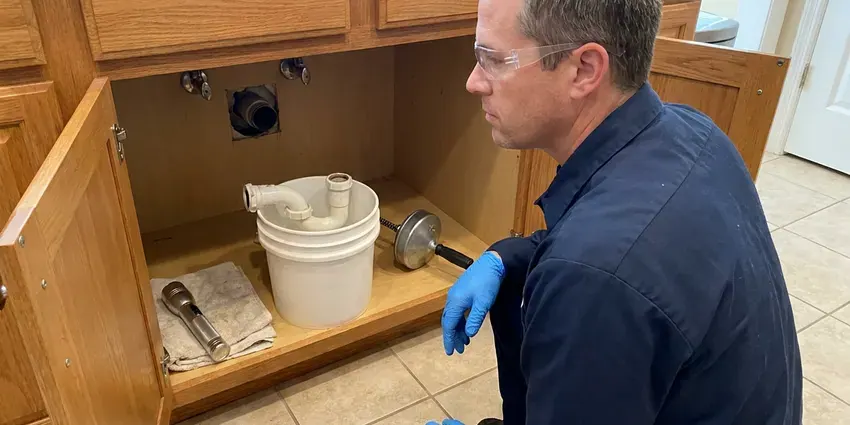

Pipe Repair in Mansfield, OH
HRL Plumbing finds pipe leaks in Mansfield, OH with moisture meters and thermal cameras, then cuts the smallest opening possible.
- Same-Day Leak Response
- Guaranteed Workmanship
- Licensed Plumbers
- Thermal Leak Locating
Leaking Pipe in Mansfield, OH?
We help you shut off the water on the phone, and a plumber follows to fix it for good.
Pipe Repair in Mansfield, OH for Leaks, Bursts and Rust
HRL Plumbing looks for the cause along with the leak. Pressure is a common one. A house running at 100 psi will keep breaking fittings and blowing out supply lines no matter how good the repair is, so we put a gauge on a hose bib and check the pressure regulator on most calls. It takes five minutes.
Some of what we do:
- Pressure regulator testing and replacement so repairs hold
- Galvanized to PEX or copper transition repairs with dielectric unions
- Copper pipe replacement with soldered or press fittings

Additional Plumbing Repair Services in Mansfield, OH
We offer expert plumbing repair services across Mansfield, OH to fix leaks, restore flow, and keep your system running smoothly.


Customers
Why Choose HRL Plumbing for Pipe Repair in Mansfield, OH?
Our trucks carry copper, PEX, CPVC, galvanized nipples and transition fittings. Fewer return visits. Most pipe repairs in Mansfield are finished on the first visit, and anything unusual gets ordered before we leave so the return trip is scheduled right away. We tell you the next step.
- Stocked Trucks, Common pipe and fittings are on hand for most jobs.
- Fast Leak Location, Thermal imaging and moisture meters keep drywall openings small.
- Local Code, Repairs meet Mansfield and Ohio plumbing code on materials and installation.
Citywide Coverage
Condos, townhomes, rentals and large custom homes across Mansfield all call us for leaks. Each one is plumbed differently. We trace where the lines run before we cut anything, which keeps the access openings small and in the right place.
Experienced Team
Pipe work looks simple until a fitting is wrong. Small mistakes cause leaks. Our plumbers use the right fittings, flux, primer and support straps, so each finished job is brought back to working pressure and checked.
Safety-First Approach
Cutting into a ceiling with water above it can bring it down. We drain it first. When a ceiling is holding water, we puncture it at a low point with a bucket below before opening it fully.
Trusted Certified Mansfield Plumbing Services Professionals
At HRL Plumbing, we are proud to offer certified plumbing services throughout Mansfield, OH. Those papers on the wall mean something. Our plumbers hold recognized industry credentials, and they follow strict safety and quality rules on every repair, installation and maintenance call we run.
Call Us Now PHCC Plumbing Contractor Recognition
PHCC Plumbing Contractor Recognition Better Business Bureau (BBB) Accreditation
Better Business Bureau (BBB) Accreditation Angi Certified Pro
Angi Certified Pro ISO 9001 Quality Management Certification
ISO 9001 Quality Management CertificationLeaks, Bursts and Corrosion, Repaired in Mansfield, OH
Commercial Pipe Repair in Mansfield, OH
Offices, restaurants and apartment buildings lose money when the water is off. Downtime costs. We repair larger diameter copper, CPVC and steel supply lines for Mansfield businesses, and we schedule shutdowns before opening or after closing so tenants and customers are not affected. Only the affected branch goes down.

Galvanized Pipe Repair in Mansfield
Threaded steel pipe rusts from the inside until flow drops and threaded joints start to leak. It can be patched. The trouble is that every fitting you disturb on old galvanized can start a new leak, so we replace failing sections with PEX or copper using dielectric fittings and talk through a full replacement plan when the rest is close behind. You decide the timing.
Emergency Pipe Repair in Mansfield, OH
Water coming through a ceiling is not a next-week problem. Our phones stay on. We talk you through closing the main valve, then send a plumber to find the break, replace the failed pipe and get your water back on, usually the same night. You will know what needs drying.
Drain and Waste Pipe Repair in Mansfield
Drain pipe made of ABS, PVC or cast iron can crack, separate or leak at joints. Look for ceiling spots. A leaking drain often shows up as a stain below a bathroom or a musty smell in a cabinet, so we find it, swap the bad length and run water at full volume to prove it. Vents get checked too.
Ceiling and Wall Leak Repair in Mansfield, OH
When water is pouring through a ceiling or spraying under a sink, you need help right away. Find the main valve. We walk you through shutting off the water over the phone and send a plumber, who stops the leak, makes the repair and restores water as soon as the line passes a pressure test. You will know what needs drying.
Business Pipe Repair in Mansfield, OH
Pipe trouble in a commercial building can close a business for the day. We keep you open. Our plumbers handle restroom groups, kitchen supply lines, mechanical room piping and larger diameter mains, and we can work after hours so customers and tenants never see the shutdown. Documentation is available.
Frozen and Burst Line Repair in Mansfield
Pipes in exterior walls, attics and crawlspaces freeze first. Ice splits the pipe. The split usually does not leak until the ice thaws, so a pipe that froze overnight may start spraying the next afternoon once the house warms up. We repair the split and add insulation. We can add heat cable where needed.

Buried Line Repair in Mansfield
Buried pipes can be damaged by settling, roots or deep frost. Frozen pipes are a regular winter concern in Ohio, especially in crawlspaces, exterior walls and unheated garages. Water mains are common. We locate the leak without guessing, then repair it through a small pit or replace the line with a trenchless pull when the old pipe is beyond patching. Sewer lines get a camera.
Pipe Leak Repair Near Me in Mansfield, OH
You want a plumber who shows up on time and fixes the leak without a week of back and forth. That is how we run these calls. One plumber finds it, the same plumber repairs it, with the price written down before a cutter comes out.
Local matters on pipe work because water quality and pipe age vary from one area to the next. Hard water speeds up wear. We know which parts of town see the most pinhole leaks, and that shortens the search when your pipe starts leaking.
HRL Plumbing at a Glance
- Fully licensed plumbing team covering Mansfield, OH
- 24/7 emergency service with same-day scheduling
- Upfront, flat-rate pricing before work begins
- 4.9-star rated by 673+ Ohio customers
Mansfield Map
Mansfield Information
- Population
- 47,711
- Area codes
- 419/567/330
- Service area
- Mansfield and towns within a 40 mile drive
- Nearby
- Elyria, Newark, Lorain, Dublin
Hard water, high pressure and long runs through hot attics or cold crawlspaces shorten the life of household plumbing in Mansfield, OH, so small leaks rarely stay small.
Talk to a Plumber
Reach out to HRL Plumbing for honest, reliable plumbing from people who know the trade in Mansfield, OH.
Our Specialized Plumbing Services in Mansfield, OH
At HRL Plumbing, we handle the full list of plumbing services across Mansfield, OH. We go from leak detection all the way to full system installations, for homes and commercial buildings, and we do it quickly at a fair price. Take a look at our core services below:


How a Pipe Repair Goes in Mansfield, OH
Three or four steps, most often finished the same day.
Call and Book
Phone (740) 449-7505 and tell us where the water is. We will help you shut it off.
Find and Price
A plumber locates the leak with moisture and thermal tools and writes up the price.
Repair
Once you approve, we cut out the damaged pipe and install the repair with matching fittings.
Frequently Asked Questions About Pipe Repair in Mansfield
A simple accessible leak runs $150 to $450. Wall access adds cost. A burst pipe that needs significant access or a long replacement section could run $500 to $2,500 or more, with slab and ceiling leaks at the top of the range. The written quote follows diagnosis.
Yes. We put the labor warranty on paper. Parts carry their own manufacturer coverage, so you are protected on both the materials and the work that went into installing them. The exact terms are on your quote.
All the common ones. Old and new. Copper, PEX, PVC, CPVC and galvanized steel make up most of what we see in Mansfield, OH, so the trucks are set up for every one. Many homes have two or three types.
Policies often cover sudden water damage from a burst pipe. Not the pipe itself. The cost of fixing old or corroded pipe is usually yours, but the resulting damage to the house may be claimable. Check with your agent. We provide documentation.
A visible leak is often fixed in an hour or two. Walls add time. Burst pipes behind walls or slab leaks can take several hours to a full day, depending on how much access is needed and whether the line has to be rerouted. We give you a timeline with the price.
Every repair is warrantied. The terms are in writing. Our workmanship warranty covers the repair, and the materials we install carry their own manufacturer warranties on top of it. You see the terms first.
Check the meter with every fixture off. Watch the dial. If it moves, water is going somewhere, so we use those clues to narrow the search before we bring out the tools. We can confirm it fast.
We use pipe and fittings from major manufacturers. Everything is code-listed. That includes copper tube, PEX systems from makers like Uponor and Zurn, and PVC and CPVC from established suppliers, with every product meeting the ASTM and NSF standards required for drinking water or drain use. No off-brand fittings.
What Our Customers Say About Our Plumbing Experts

Rachel N.
Hard water was leaving white crust on every faucet and our dishwasher was struggling. The tech tested the water, recommended a softener sized for a family of five, and installed it with a bypass valve in one afternoon. The spots on our glasses are gone.
Water Softener · Dublin, OHEmily R.
The shutoff valve under our kitchen sink snapped off in my hand on a Sunday morning. HRL Plumbing had someone out by early afternoon. He replaced both angle stops with quarter turn valves and showed me where our main shutoff was, which I honestly did not know.
Plumbing Repair · Akron, OHMegan L.
Our upstairs tub drained so slowly that every shower turned into a bath. HRL Plumbing pulled a wad of hair out of the stopper and then snaked the line past the trap. Three months later it still drains fast.
Drain Cleaning · Elyria, OH
Sofia M.
Two new toilets went in during one visit. The tech set them on new wax rings and swapped the old supply lines. He also noticed our bathroom faucet dripping and replaced the cartridge while he was there. No mess left behind.
Toilet Installation · Newark, OH
Carlos V.
Our house still had galvanized pipe, and upstairs the shower was a trickle. The crew repiped everything in PEX over three days and patched every drywall hole before they left. The pressure difference is night and day.
Repiping · Lorain, OHDaniel K.
A pipe burst in the garage ceiling at 11 at night. Someone answered on the second ring, and the plumber was in my driveway about fifty minutes later. He shut off the main, cut out the split section, and had water back on before 2 am.
Emergency Plumbing · Lorain, OH